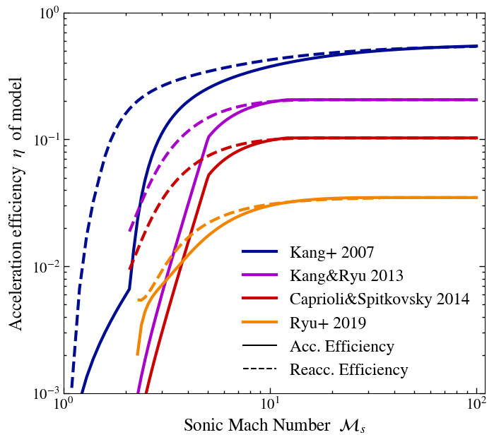
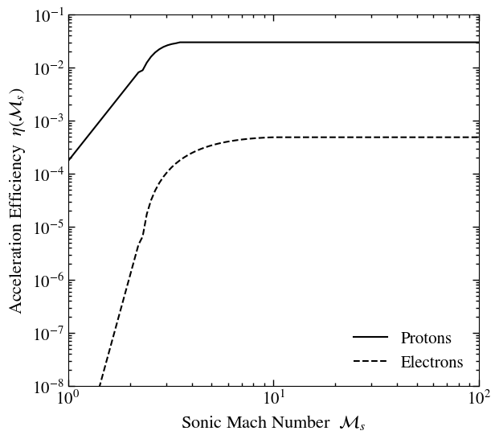

DiffusiveShockAccelerationModels.jl
This package provides a number of efficiency models for Diffuse Shock Acceleration (DSA). It provides a number of functions to calculate what fraction of the energy dissipated at a shock is used to accelerate Cosmic Rays (CRs). If you use this implementation in a publication please cite Böss et al. (2023).
Install
As usual with Julia just run
] add DiffusiveShockAccelerationModelsMach number dendent efficiency models
Different authors found a number of models that describe the acceleration efficiency of CRs at shocks dependent on the sonic Mach number. Here we implemented the following DSA models, as summarized in Böss et al. (2023):
DiffusiveShockAccelerationModels.Kang07 — TypeKang07(X_cr::T = 0.3, η_max::T = 0.57) where TEfficiency model by Kang, Ryu, Cen, Ostriker 2007, http://arxiv.org/abs/0704.1521v1
Values
X_cr: Pcr / Pth defined in model for re-acceleration. Basis for interpolation between acceleration and re-acceleration efficiency.η_max: Maximum efficiency defined in the model
DiffusiveShockAccelerationModels.KR13 — TypeKR13(X_cr::T=0.05, η_max::T=0.0348) where TEfficiency model by Kang&Ryu 2013: ApJ, 764, 95.
Values
X_cr: Pcr / Pth defined in model for re-acceleration. Basis for interpolation between acceleration and re-acceleration efficiency.η_max: Maximum efficiency defined in the model
DiffusiveShockAccelerationModels.CS14 — Type CS14(X_cr::T=0.05, η_max::T=0.5*0.2055) where TEfficiency model by Caprioli&Spitkovsky 2014 efficiency.
Values
X_cr: Pcr / Pth defined in model for re-acceleration. Basis for interpolation between acceleration and re-acceleration efficiency.η_max: Maximum efficiency defined in the model
DiffusiveShockAccelerationModels.Ryu19 — Type Ryu19(X_cr::T=0.05, η_max::T=0.0348) where TEfficiency model by Ryu et al. 2019: https://arxiv.org/pdf/1905.04476v2.pdf.
Values
X_cr: Pcr / Pth defined in model for re-acceleration. Basis for interpolation between acceleration and re-acceleration efficiency.η_max: Maximum efficiency defined in the model

On top of that you can find the DSA model by Kang (2024):
DiffusiveShockAccelerationModels.Kang24_p — TypeKang24_p(X_cr::T=1.0, η_max::T=0.03) where TEfficiency model for protons by Kang (2024).
Values
X_cr: Pcr / Pth defined in model for re-acceleration. Basis for interpolation between acceleration and re-acceleration efficiency.η_max: Maximum efficiency defined in the model
DiffusiveShockAccelerationModels.Kang24_e — TypeKang24_e(X_cr::T=1.0, η_max::T=0.0004871685) where TEfficiency model for electrons by Kang (2024).
Values
X_cr: Pcr / Pth defined in model for re-acceleration. Basis for interpolation between acceleration and re-acceleration efficiency.η_max: Maximum efficiency defined in the model

You can also use the constant efficiency used by Pfrommer et al. (2017):
DiffusiveShockAccelerationModels.P16 — Type P16(X_cr::T=0.05, η_max::T=0.5) where TConstant efficiency as in Pfrommer+ 2016, doi: 10.1093/mnras/stw2941
These efficiency models can be used with::
DiffusiveShockAccelerationModels.η_Ms — Functionη_Ms(η_model::AbstractShockAccelerationEfficiency, M::T, X_cr::T) where {T<:Real}Calculates the sonic Mach Number dependent η_model as a linear interpolation between acceleration and reacceleration.
You can also disentangle this for either pure acceleration:
DiffusiveShockAccelerationModels.η_Ms_acc — Functionη_Ms_acc(η_model::Kang07, M::Real)Initial acceleration efficiency for model from Kang, Ryu, Cen, Ostriker 2007, http://arxiv.org/abs/0704.1521v1
η_Ms_acc(η_model::KR13, M::T) where TEfficiency model from Kang&Ryu 2013, doi:10.1088/0004-637X/764/1/95
η_Ms_acc(η_model::CS14, M::T) where TEfficiency from Caprioli&Spitkovsky 2015, doi: 10.1088/0004-637x/783/2/91 Same simplified approach as Vazza+16 -> is roughly half the efficiency of Kang&Ryu 2013.
η_Ms_acc(η_model::Ryu19, M::T) where TEfficiency model from Ryu et al. 2019, https://arxiv.org/abs/1905.04476 Values for 2.25 < M <= 5.0 extrapolated to entire range
η_Ms_acc(η_model::P16, M::T) where TConstant efficiency as in Pfrommer+ 2016, doi: 10.1093/mnras/stw2941
η_Ms_acc(η_model::Kang24_p, M::Real)Initial acceleration efficiency model for protons by Kang (2024).
η_Ms_acc(η_model::Kang24_e, M::Real)Initial acceleration efficiency model for electrons by Kang (2024).
Or re-acceleration:
DiffusiveShockAccelerationModels.η_Ms_reacc — Functionη_Ms_reacc(η_model::Kang07, M::Real)Reacceleration efficiency for model from Kang, Ryu, Cen, Ostriker 2007, http://arxiv.org/abs/0704.1521v1
η_Ms_reacc(η_model::KR13, M::T) where TEfficiency model from Kang&Ryu 2013, doi:10.1088/0004-637X/764/1/95
η_Ms_reacc(η_model::CS14, M::T) where TEfficiency from Caprioli&Spitkovsky 2015, doi: 10.1088/0004-637x/783/2/91 Same simplified approach as Vazza+16 -> is roughly half the efficiency of Kang&Ryu 2013.
η_Ms_reacc(η_model::Ryu19, M::T) where TEfficiency model from Ryu et al. 2019, https://arxiv.org/abs/1905.04476 Values for 2.25 < M <= 5.0 extrapolated to entire range
η_Ms_reacc(η_model::P16, M::T) where TConstant efficiency as in Pfrommer+ 2016, doi: 10.1093/mnras/stw2941
η_Ms_reacc(η_model::Kang24_p, M::Real)Reacceleration efficiency for model by Kang (2024), identical to acceleration efficiency.
η_Ms_reacc(η_model::Kang24_e, M::Real)Reacceleration efficiency for model by Kang (2024), identical to acceleration efficiency.
Defining your own acceleration efficiency
You can also define your own acceleration efficiency as a subtype of
DiffusiveShockAccelerationModels.AbstractShockAccelerationEfficiency — TypeAbstractShockAccelerationEfficiencyAbstract type for shock acceleration efficiencies
We provide a helper function for the fit used in Kang+2007 in case it's useful for your acceleration model:
DiffusiveShockAccelerationModels.kr_fitting_function — Functionkr_fitting_function(x::Real, a0::Real, a1::Real, a2::Real, a3::Real, a4::Real)Helper function to use the fitting function from KR07.
Magnetic field angle dependent efficiency models
Another parameter in the acceleration efficiency is the shock obliquity. Here we used the results from Pais et al. (2019) who fit a functional form to the data by Caprioli&Spitkovsky (2014).
DiffusiveShockAccelerationModels.η_B — Functionη_B(θ_B::Real, θ_crit::Real)Calculate B angle dependent efficiency component following Pais et. al. 2018, eq. 7, https://arxiv.org/pdf/1805.00128.pdf
Ions
Ions are found to be accelerated primarily at quasi-parallel shocks. We provide two helper functions for this.
DiffusiveShockAccelerationModels.ηB_acc_p — FunctionηB_acc_p(θ_B::Real)Magnetic field geometry dependent efficiency for protons at initial acceleration.
DiffusiveShockAccelerationModels.ηB_reacc_p — FunctionηB_reacc_p(θ_B::Real)Magnetic field geometry dependent efficiency for protons at reacceleration.
Electrons
Electrons are found to be accelerated primarily at quasi-perpendicular shocks. We provide two helper functions for this.
DiffusiveShockAccelerationModels.ηB_acc_e — FunctionηB_acc_e(θ_B::Real)Magnetic field geometry dependent efficiency for electrons at initial acceleration.
DiffusiveShockAccelerationModels.ηB_reacc_e — FunctionηB_reacc_e(θ_B::Real)Magnetic field geometry dependent efficiency for electrons at reacceleration.
Usage
To use for example the mach number dependent model by Kang & Ryu (2013), combined with the shock obliquity model by Pais et. al. (2019)
using DiffusiveShockAccelerationModels
ηM_model = KR13() # Mach number dependent model
Mach = 5.0 # we assume a Mach 5 shock
θ_B = 0.1π # angle between shock normal and magnetic field vector
X_cr = 0.0 # X_cr = P_cr / P_th -> in this case no pre-existing CRs
# magnetic field angle dependent acc. efficiency
ηB = ηB_acc_p(θ_B)
# Mach number dependent acc. efficiency
ηM = η_Ms(ηM_model, Mach, X_cr)
# total efficiency
η_tot = ηB * ηM